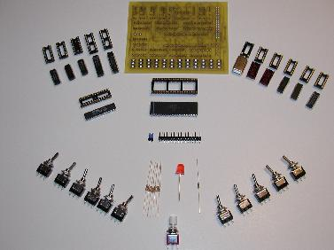
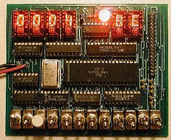
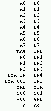
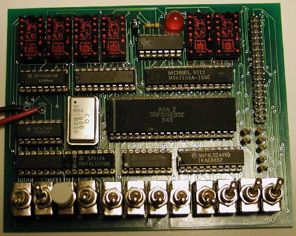

This kit is based upon my adaptation of the Elf project presented in Popular Electronics. I have designed a PCB to make for easier construction than the wire-wrap method I used in my Elf.
I have been able to purchase a very limited supply of cdp1802bce cpus, as such this kit will be a very limited edition offering.
I initially plan to release these as build it yourself kits, but if somebody hassles me enough, I suppose I could build it for you.
I will make the bareboard PCBs available without the full kit for those who only want the PCB. I will not however sell the 1802s outside of the kits. I also intend to make the PCB engineering files available on this website for anybody who would like to make the board themselves.
If you are interested in one of these kits please write to me at mikehriley@hotmail.com. Due to the limited supply, these kits are on a first come first served basis.

Features:| Description | Price |
|---|---|
| Basic Kit (no address display) | $150 |
| 2 digit address option | $45 |
| 4 digit address option | $90 |
| Bare PCB | $30 |
| 5v Wall Adapter | $14 |
| Pre-assembly | $65 |
What will you need in addition to the kit:
Disclaimer:
There is no warantee of any kind on Micro/Elf Kits! I make every effort to test all
components before shipping but cannot be responsible if a kit is mis-assembled or the
components are mishandled. For a $100 charge I will repair a mis-assembled kit.
News:
| 2/24/2004 | I have completed analysis of the circuit design. For those interested, you may download the simulation file. The latest version of DCE is required to run the simulation. |
| 3/01/2004 | I have completed the pcb circuit check and have sent for 2 prototypes from the pcb fab. |
| 3/18/2004 | Have received all parts to build first prototype |
| 3/19/2004 | First prototype is now built. Testing functionality |
| 3/20/2004 | Testing complete. Now finishing up the manual |
| 3/23/2004 | Now taking reservations |
| 4/07/2004 | The production PCBs have been ordered. They should arrive on 4/13 at which point Micro/Elf kits and boards will be available for purchase |
| 4/14/2004 | Production PCBs have arrived. Tonight I will build one, if all goes well, then Micro/Elfs will be available |
| 4/15/2004 | First kit built, all works! Boards and kits are now available!!! |
Parts List:
| Quantity | Description | Quantity | Description |
|---|---|---|---|
| 1 | Micro/Elf PCB | 1 | 470 Ohm Resistor |
| 1 | CDP1802 CPU | 7 | 47K Ohm Resistors |
| 2 | TIL-311 Hex Displays | 1 | 2mhz Crystal Oscilator |
| 1 | CY7C199 (or equivalent) 32K Static Ram | 1 | 2x18 Pin Header |
| 1 | 74LS00 Quad NAND Gate | 1 | 1x2 Pin Header |
| 1 | 74LS04 Hex Inverter | 11 | SPDT Toggle Switches |
| 1 | 74LS74 Dual D-type Flip-Flop | 1 | SPDT Push-Button |
| 1 | 74LS151 8-Input Multiplexer | 5 | 14-Pin Sockets |
| 1 | 74LS244 Octal Tri-State Driver | 1 | 14-Pin Oscilator Socket |
| 1 | 74LS279 Quad S-R Latches | 3 | 16-Pin Sockets |
| 1 | 74LS367 Hex Tri-State Buffers | 2 | 20-Pin Sockets |
| 1 | 74LS373 Octal Latch | 1 | 28-Pin Socket |
| 1 | LED | 1 | 40-Pin Socket |

